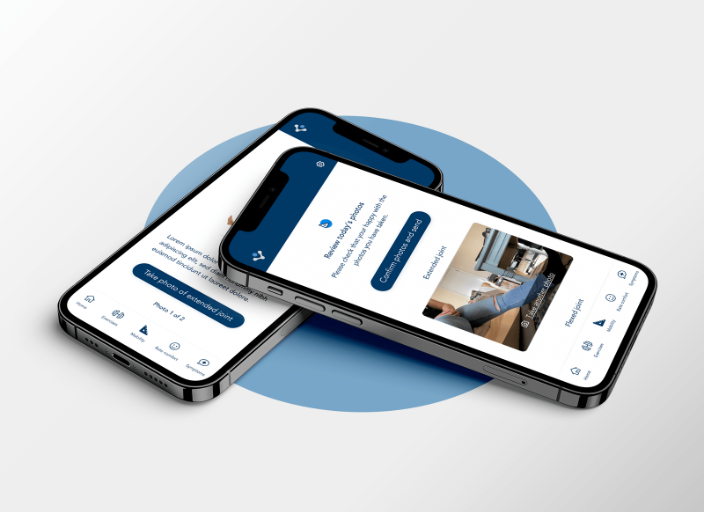

Revolutionising the Patient Journey with a Design Sprint
 A Case Study from Agile KineticIn the dynamic world of software development, especially in health technology, understanding and enhancing the user experience is paramount. Recently at Agile Kinetic, we seized a unique opportunity to refine our MoveLab product, a crucial tool designed for patients to receive, comprehend, and accurately perform movements prescribed by their clinical teams. Our goal was to make the patient journey seamless and intuitive.
Embracing the Sprint MethodologyDrawing inspiration from Jake Knapp's groundbreaking methodology detailed in "Sprint", we embarked on a week-long design sprint. This strategic move not only ensured the productive use of a week preceding Christmas but also aligned perfectly with our development cycle.
The Process: Collaborative, Intensive, and InnovativeUtilizing Miro as our collaboration platform, we followed the structured steps of the Sprint process. This involved mapping out the problem, sketching various solutions, deciding on the best approach, prototyping, and finally, testing our ideas with real users.
Discoveries and OutcomesOur findings were eye-opening. The original patient journey, though developed with careful consideration, was not as user-friendly as we had hoped. The insights gained from the alpha testing of MoveLab were invaluable, shedding light on areas needing improvement.
Redesigning with Precision and ClarityGuided by user feedback and our sprint discoveries, we reimagined the patient experience. The new design mirrors the simplicity and step-by-step approach found in government website processes, known for their clarity and ease of use. We broke down the journey into small, manageable steps, ensuring that patients could effortlessly navigate the process.
The Impact: A More Intuitive MoveLabThe outcome was a completely redesigned patient interface for MoveLab. This new design is not just a visual overhaul but a transformation in how patients interact with our software. It's more intuitive, less overwhelming, and most importantly, patient-centric.
Reflections as a Founder and Product ManagerThis sprint was a testament to the power of focused, collaborative effort and the value of user feedback. It underscored my role as a founder and product manager in steering product development towards real user needs. Agile Kinetic's commitment to continuous improvement and user-centric design remains our guiding principle, as we strive to innovate in the digital health space.